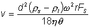
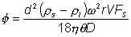
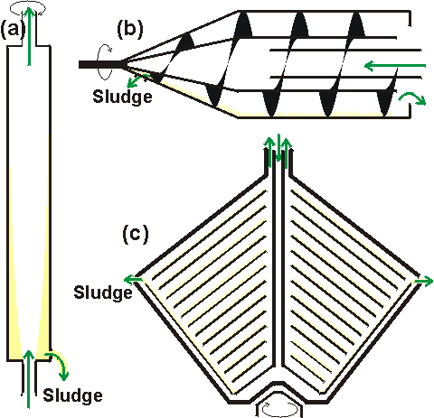

Enzyme Technology
Centrifugation
Centrifugation separates on the
basis of the particle size and density difference between the liquid and solid
phases. Sedimentation of material in a centrifugal field may be described by

(2.1)
where v is the rate of sedimentation, d is the particle
diameter, ρs is the particle density, ρl is
the solution density, w is the angular velocity in radians
s−1, r is the radius of rotation, h is the dynamic
viscosity, Fs is a correction factor for particle interaction during
hindered settling and q is a shape factor (=1 for spherical particles).
Fs depends on the volume fraction of the solids present; approximately
equalling 1, 0.5, 0.1 and 0.05 for 1%, 3%, 12% and 20% solids volume fraction
respectively. Only material which reaches a surface during the flow through
continuous centrifuges will be removed from the centrifuge feedstock, the
efficiency depending on the residence time within the centrifuge and the
distance necessary for sedimentation (D). This residence time will equal the
volumetric throughput (f) divided by the volume of the centrifuge (V).
The maximum throughput of a centrifuge for efficient use is given by

(2.2)
The efficiency of the process is seen to depend on the
solids volume fraction, the effective clarifying surface (V/D) and the
acceleration factor (w2r/g, where g is the gravitational
constant, 981 cm s−2; a rotor of radius 25 cm spinning at 1 rev
s−1 has an acceleration factor of approximately 1 G). Low acceleration
factors of about 1 500 g may be used for harvesting cells whereas much higher
acceleration factors are needed to collect enzyme efficiently. The product of
these factors (w2rV/gD) is called the sigma factor
(S)
and is used to compare centrifuges and to assist scale-up.
Laboratory centrifuges
using tubes in swing-out or angle head rotors have high angular velocity (w) and radius of rotation (r) but small capacity (V) and substantial
sedimentation distance (D). This type of design cannot be scaled-up safely,
primarily because the mechanical stress on the centrifuge head increases with
the square of the radius, which must increase with increasing capacity.
For
large-scale use, continuous centrifuges of various types are employed (Figure
2.2). These allow the continuous addition of feedstock, the continuous removal
of supernatant and the discontinuous, semicontinuous or continuous removal of
solids. Where discontinuous or semicontinuous removal of precipitate occurs, the
precipitate is flushed out by automatic discharge systems which cause its
dilution with water or medium and may be a problem if the precipitate is
required for further treatment. Centrifugation is the generally preferred method
for the collection of enzyme-containing solids as it does not present a great
hazard to most enzymes so long as foam production, with consequent enzymic
inactivation, is minimised.

Figure 2.2. Basic designs of industrial
centrifuges, showing the flow of material within the bowls. Motor drives,
cooling jackets and sludge collection vessels are not shown. (a) Tubular bowl
centrifuge. This is generally operated vertically, the tubular rotor providing a
long flow path enabling clarification. The sludge collects and must be removed.
(b) Continuous scroll centrifuge. This is operated horizontally. The helical
screw scrolls the solids along the bowl surface and out of the liquid; the
sludge being dewatered before discharge. The clarified liquor overflows over an
adjustable weir at the other end of the bowl. The screw conveyer rotates at a
slightly different speed to the bowl. (c) Continuous multichamber disc-stack
centrifuge. The bowl contains a number of parallel discs providing a large
clarifying surface with a small sedimentation distance. The sludge is removed
through a valve.
Small particles of cell
debris and precipitated protein may be sedimented using tubular bowl
centrifuges, of which Sharples centrifuges (produced by Pennwalt Ltd.) are the
best known. These semi-continuous centrifuges are long and thin enabling rapid
acceleration and deceleration, minimising the down-time required for the removal
of the sedimented solids. Here the radius and effective liquid thickness are
both small allowing a high angular velocity and hence high centrifugal force;
small models can be used at acceleration factors up to 50,000 g, accumulating
0.1 Kg of wet deposit whereas large models, designed to accumulate up to 5 Kg of
deposit, are restricted to 16,000 g. The capacities of these centrifuges are
only moderate.Multichamber disc-stack centrifuges, originally designed (by
Westfalia and Alpha-Laval) for cream separation, contain multiple coned discs in
a stack which are spun and on which the precipitate collects. They may be
operated either semi-continuously or, by using a centripetal pressurising pump
within the centrifuge bowl which forces the sludge out through a valve,
continuously. The capacity and radius of such devices are large and the
thickness of liquid is very small, due to the large effective surface area. The
angular velocity, however, is restricted giving a maximum acceleration factor of
about 8,000 g. A different design which is rather similar in principle is the
solid bowl scroll centrifuge in which an Archimedes' screw collects the
precipitate so that fluid and solids leave at opposite ends of the apparatus.
These can only be used at low acceleration (about 3,000 g) so they are suitable
only for the collection of comparatively large particles.
Although many types of
centrifuge are available, the efficient precipitation of small particles of cell
debris can be difficult, sometimes near-impossible. Clearly from Equation
2.2,
the efficiency of centrifugation can be improved if the particle diameter (d) is
increased. This can be done either by coagulating or flocculating particles.
Coagulation is caused by the removal of electrostatic charges (e.g., by pH change)
and allowing particles to adhere to each other. Flocculation is achieved by
adding small amounts of high-molecular-weight charged materials which bridge
oppositely-charged particles to produce a loose aggregate which may be readily
removed by centrifugation or filtration. Flocculation and coagulation are cheap
and effective aids to precipitating or otherwise harvesting whole cells, cell
debris or soluble proteins but, of course, it is essential that the agents used
must not inhibit the target enzymes. It is important to note that the choice of
flocculant is determined by the pH and ionic strength of the solution and the
nature of the particles. Most flocculants have very definite optimum
concentrations above which further addition may be counter-effective. Some
flocculants can be rapidly ruined by shear.
A comparatively recent introduction
designed for the removal of cell debris is a moderately hydrophobic product in
which cellulose is lightly derivatised with diethylaminoethyl functional groups.
This material (Whatman CDR; cell debris remover) is inexpensive (essential as it
is not reusable), binds to unwanted negatively charged cell constituents, acts
as a filter aid and may be incinerated to dispose of hazardous
wastes.
Home
| Back | Next
This page was established in 2004 and last updated by Martin
Chaplin
on
6 August, 2014
|